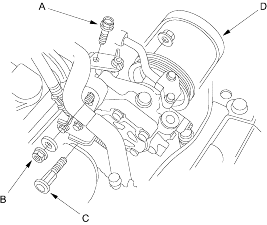
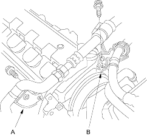

- Remove the adjusting plate mounting bolt (A), locknut (B) and mounting bolt (C), then remove the power steering (P/S) pump belt (D) and pump without disconnecting the P/S hoses.

- Remove the alternator refer to the '01 Civic Shop Manual on this CD (see page 4-31).
- Remove the air conditioning (A/C) hose bracket (A) and P/S hose bracket (B).

- Remove the engine wire harness connectors and wire harness clamps from the intake manifold.
- Idle Air Control (IAC) valve connector
- Throttle position sensor connector
- Manifold Absolute Pressure (MAP) sensor connector
- Evaporative Emission (EVAP) canister purge valve connector
- Engine Coolant Temperature (ECT) sensor connector
- Radiator fan switch connector
- CKP sensor connector
- TDC sensor connector
- Exhaust Gas Recirculation (EGR) connector (D17A9 engine)
- VTEC solenoid valve connector (Except D17A8 engine)
- VTEC oil pressure switch connector (Except D17A8 engine)
- Oil pressure sensor connector
- Support the engine with a jack and wood block under the oil pan.
- Remove the upper bracket.